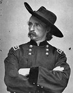

|

|

|
|
|
American folklore has immortalized George Armstrong Custer
for his storied "last stand" at the Battle of the Little Big
Horn, but Custer had achieved lasting fame more than a
decade earlier in a score of major Civil War engagements.
Three days after his graduation from West Point in 1861,
last in his class, Lieutenant Custer participated in the
First Battle of Bull Run. From Bull Run to Appomattox,
nearly 4 years later, he took part in virtually every
important battle of the Army of the Potomac.
Headstrong, contemptuous of army regulations, and ever
thirsty for glory, Custer made many enemies but was idolized
by millions for his unquestioned courage and his audacity in
conducting cavalry operations. Fearless and often reckless
under fire, he had 11 horses shot under him, yet was wounded
only once. In 1862 he was one of the first Union officers to
make observations in combat from a Balloon.
His bravery attracted the attention of his senior
commanders-Maj. Gens. Philip Kearny, William F. Smith,
George B. McClellan, and Alfred Pleasanton-and after
Custer's heroic charge during the June 1863 Battle of Aldie,
Va, Pleasanton recommended him for promotion from captain to
brigadier general by June 29th. At 23 Custer became the
youngest general in the Union army, assuming command of the
2nd Brigade of the 3rd Cavalry Division just in time to lead
his men at Gettysburg.
In October of 1864 he took command of the 3rd Cavalry,
becoming one of Maj. Gen. Philip Sheridan's favorite
commanders in the Shenandoah Valley Campaign. Custer was
brevetted for gallantry at Gettysburg, Yellow Tavern (where
he led the charge in which Lt. Gen. J.E.B. Stuart was
killed), Third Winchester, Fisher's Hill, and Five Forks. He
was promoted to major general, U.S. Volunteers, on April 15,
1865.
By war's end he was a national hero, his long golden
ringlets and unorthodox attire as well known as his erratic
brilliance on the battlefield. Often insubordinate to his
superiors, Custer insisted on obedience from his commands.
In Kansas in 1867, he ordered his troopers to fire on a
group of deserters (one died), but then left his unit
without permission. He was court martialed, found guilty,
and suspended for one year. Sheridan, unable to catch the
Cheyenne in summer campaigns, used Custer in November 1868
to destroy their camp on the Washita. Custer led the Black
Hills expedition in 1874 that confirmed gold in the area. At
the outbreak of the Great Sioux Uprising of 1876, he
attempted to defeat, with only his 7th Cavalry, an Indian
force that outnumbered them by as much as ten to one. After
the reckless division of his regiment, the 266 officers and
men who rode with his segment at the Little Big Horn on June
25, 1876, were all killed. Custer was buried with honors at
West Point.
Source: John T. Hubbell and James W. Geary, Biographical Dictionary of the
Union: Northern Leaders of the Civil War (Westport, CT: Greenwood Publishing,
1995), 123.
|